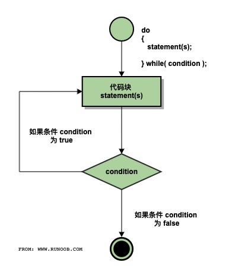
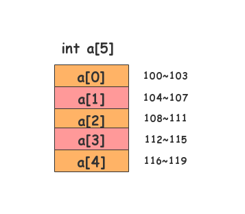
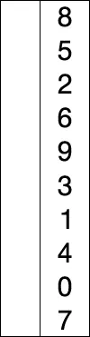

What You'll Learn
- 程序的基本概念
- 程序设计语言
C语言的词法C程序的基本结构- 编译运行
程序的基本概念
算法
我们给出如下问题：有四个外观大小都一模一样的苹果，现其中三个重量相同，另外一个比这三个轻。请用一个没有砝码的天平，最大称两次，找出这个轻的苹果。
问题一经提出，你的大脑（CPU）就会飞快的运行，就会找到解决这个问题的方法。（我不怀疑你马上就找到了方法，且方法可能还不止一个）
那么，我们就说
程序
考虑刚才那个找苹果的算法，你一定会告诉别人: 先如何，再如何，然后就成了。
是的，我们用人类的语言描述了这个算法。 但如果我们需要计算机帮助，那我们就需要用计算机能懂的语言，即计算机语言。
那么，简单的说，
程序设计语言
分类
那么有哪些计算机语言或程序设计语言呢? 简单的说分为三种: 机器语言，汇编语言，高级语言。
比如我们要计算机帮我计算 1 + 2，上面三类计算机语言可能分别是这样的:
// 机器语言，机器直接识别并能执行，效率最高，但程序员不喜欢
// 第一个是操作码（加法），后面是操作数（分别是1和2）
00000011 00000001 00000010
// 汇编语言，将机器语言纯粹的二进制做了一些改进。
// 但机器不能直接执行了，需要汇编（简单想象成翻译好了）成计算机能识别的机器语言才能执行
// 执行效率较高，但一般程序员也不喜欢（破解软件的或搞外挂的必须掌握）
// 下面代码先已经将1 和 2提前放到了eax和ebx寄存器了。 最后结果放到eax中
ADD %eax，%ebx
// 高级语言，基本就是直白的数学表达式。
// 计算机更是不知所云，需要进行编译才可运行。 相比之下效率最低
// 由于接近自然语言，程序员非常喜欢
1 + 2
C 语言
C语言即是高级计算机语言的一种，且是生命力非常强的一种（上世纪70年代初问世。 同时，迄今不知有多少种计算机语言销声匿迹了）。
我们既可以用C语言编写系统软件（Unix，Windows，Linux，Adroid 等等），也可以编写各种应用软件。
当然，除了C语言外，还有不少先进的高级语言。 推荐: Go，Java，Python，Typescript，Dart，Rust，Scala等等
C 语言的词法
字符
既然是一门语言，当然会规定语言中可以使用哪些字符。
C语言可使用的字符有: 大小写字母，数字，下划线，一些特殊字符如 +，-，=，/，>，?，(，)，;等等。
关键字
其次，C语言有一些关键字，也称保留字是其内含的，不能作为它用。 如: int，float，if，else，switch，void，for等等
标识符
在程序中，我们需要对一些对象进行命名，这就是标识符。
假设我要处理上面称苹果的问题，可能我会取标识符为: apple1，apple2等等
合法的标识符: sum，Sum，_xyz，month，count，lengthOfSomething 等等
非法的标识符: 3M，@qq.com，$solary， a/b 等等。 想想为什么?
语句
任何语言都有语句，一个计算机程序由或多或少的语句构成。
C语言有不少语句类型，如循环语句，选择语句等等。
C 程序的基本结构
或多或少的语句将组成一个个C语言程序。 显然，这些语句需要按照一定的格式或规定进行组织。
下面是一个通用的C程序结构:
#include "stdio.h"
void main() {
// 你的语句将写在此处，也是你知识和智慧所在
}
下面我们来编写我们的第一个C语言程序。 打开你的开发软件如Code，新建一个以.c为后缀的C语言源程序文件如下:
// 这是著名的 Hello World 程序
#include "stdio.h"
void main() {
printf("Hello World!\n");
}
运行它试试(如果使用的是Code，那么点击屏幕右上角的 ▷ 按钮即可运行了）。
一句以上帝视角发出的问候会出现在你的屏幕的。
下面我们稍微解释一下
- 整个程序由两部分组成，
#include "stdio.h以及void main() { } #include "stdio.h"表明我们要使用stdio.h这个头文件(Standard Input and Output），我们把它导入进来main()称为主函数。 每个C语言程序有且只能有一个main函数，它是程序开始执行的地方即入口main函数的函数体即{}中的语句就是我们大展拳脚的地方- 第一行是一个注释，用于解释/标注某些东西给程序员查看，
C语言系统直接忽略它 printf()是来自我们前面导入的stdio.h头文件的一个输入函数，简单的将要输出的内容放到""中即可- 注意到
printf("...");最后的;了吗，不要忘记语句以;结束 - 输出内容中有个奇怪的
\n，它代表的是回车这个特殊字符。 去掉它试试。
编译运行
前面我们谈到计算机编程语言，计算机能直接理解并运行的只有机器语言编写的程序。
如果你运行了第一个C语言程序，你马上就会想到，我们不是直接点击 ▷ 按钮就运行了吗?
没错，但它不能说明高级语言编写的程序计算机能直接执行。 实际上，点击 ▷ 按钮按钮后，经过了：
- 编译 对源程序进行语法分析，找出程序的语法问题，生成二进制目标程序
- 链接 将目标程序与相关的库文件连接，生成可执行文件（
Windows系统下即为.exe文件） - 执行 然后才执行
课后练习
按照棋歌教学网的安装说明搭建开发环境，并成功编写运行你的第一个C语言程序。
What You'll Learn
- 数据类型
- 常量
- 变量
- 格式化输入输出
- 字符数据的输入输出
数据类型
编写程序解决问题，不可避免的会遇到很多的数据（想想现在火热的大数据Big Data）。
这些数据一般分为两类:
- 数值数据，可进行算术运算。 如:
3.14，8964等等 - 非数值数据，即单个的字符或字符串，一般无需进行运算，只表示某种符号。 如: 你的姓名，身份证号等等。
无论那种数据，在计算机内部都是以二进制表示的。
特别是英文字符，我们用了1个字节即8个二进制位来进行编码即ASCII码，如字母A就将其编为01000001，计算机一看到这串字符就明白它代表大写字母A。（8个二进制位可以编多少个码呢?）
常量
常量，程序运行过程中即不会发生改变的量。
数值常量
如圆周率 π 为3.14，珠峰高度8848米等小数和整数。 对一些较长的数，C语言还提供了科学计数的表示，如1.989E64表示1.989乘以10的64次方。
字符常量
字符常量就是单个的字符，如 U，$，@等，但C语言规定：字符常量需用单引号包裹起来，即: 'U'，'$'，'@'。
转义字符
某些字符是不可见的，如键盘上的回车或退格等。
C语言采用了一种特殊的方法来表示这些不可见的字符，用一个特殊字符反斜杠\再加上某个字母来代表。 如'\n'代表的就是回车。
以反斜杠\开头后跟一个特定字母的表示就称为转义表示，即它不代表\和n两个字符，而是一个其它意思的字符。
还有规定好的其它一些转义字符，当前你只需知道\n即可。
变量
概念
编程中，我们不仅需要使用常量，更需要使用其值可改变的量。
比如某些游戏用血量来表示角色是否活着。
开始满血可认为是100，随着搏斗，血量将减少，如果减为0，此次游戏则终止。
显然，血量就是一个可以改变的量，这就是变量。
变量的定义
C语言规定，要使用变量，首先必须定义，即需要说明其该变量是什么数据类型,叫什么名称。
C语言用int，float 和 char分别来定义整数，实数（也称浮点数）和字符型变量。
变量的名称就是标识符（你还记得第一讲有关标识符的规定吧?），一般我们希望这个名称能说明该变量用来存放什么，如: age，powerOfBoss等。
下面是一些定义变量的例子:
int age, height, width; // 定义了三个整型变量，如果有多个用逗号进行分隔
float income = 19896.4; // 定义了一个浮点型变量，并给定了一个值（初始化）
char sex, isOver; // 定义了两个字符型变量
格式化输入输出
下面我们谈谈如何在C语言中把数据输出到屏幕呈现给用户或者从键盘接收用户的输入。
输出
我们使用在stdio.h头文件中已经定义好的printf()函数进行数据的输出。
如下程序将输出你的年龄:
#include "stdio.h"
void main() {
int age; // 定义了一个整型变量 age
age = 20; // 把 20 放到 age 变量中
printf("-------this year--------"); // 输出双引号中的内容
printf("You are %d years old!\n", age); // 输出双引号中的内容，注意 %d
age = 21; // 把 21 放到 age 中，age 变量以前的值被替换
printf("-------next year--------"); // 输出双引号中的内容
printf("You will be %d years old next year!\n", age); // 输出双引号中的内容，注意 %d
}
运行上面的程序试试。
printf()函数将原样输出双引号中的内容（实际是一个字符串），这点你应该看得出来。
字符串中的\n你也应该知道是个特殊的字符表示回车。
但是你会看到有一点异样: 字符串中%d的位置输出的是age变量的内容即20或21。
我们把%d称为输出占位符，它表示此处要输出一个整数，其值与字符串后面的变量或值一一对应。 现在明白为何输出20或21了吧。
除了%d是整数的占位符外，%f对应小数，%c代表一个字符。 如:
#include "stdio.h"
void main() {
int age = 20; // 定义了一个整型变量 age 并初始化为 20
float income = 1989.64; // 定义了一个浮点型变量 income 并初始化
char isOver = 'Y'; // 定义了一个字符型变量 isOver 并初始化
printf("How old are you: %d\n", age);
printf("How old are you: %5d\n", age); // 注意是 %5d，表明这个整数至少占 5 个字符宽度
printf("What's your income: %f\n", income);
printf("What's your income: %8.2f\n", income); // 注意 %8.2f，表明包括小数点在内总共占10位，小数点后 2 位
printf("Is this game over: %c\n", isOver); // 输出指定的字符
printf("Age:%5d, Income:%10.2f, Over:%c\n", age, income, isOver); // 放在一块也可以的
}
输入
在上面的例子中，你会发现数据都是程序中给定的。
那么我们可否在程序运行时，用户才提供呢? 显然这样的程序更灵活、更有通用性。
现实编程中，我们需要使用输入函数scanf()在程序运行时来接收用户提供的数据。
scanf()函数也使用%d,%f,%c来分别接收整数、小数和单个的字符放到对应的变量中。 如:
#include "stdio.h"
void main() {
int age; // 定义了一个整型变量 age
float income; // 定义了一个浮点型变量 income
char isContinue; // 定义了一个字符型变量 isContinue
printf("Continue(Y/N)?"); // 问是否继续
scanf("%c", &isContinue); // 接收用户的输入放到 isContinue变量中。 注意 & 符号，我们以后再说明为什么必须加
printf("How old are you:");
scanf("%d", &age); // 注意 age前的 & 符号，我们以后再说明为什么必须加
printf("What's your income:");
scanf("%f", &income); // 注意 income 前的 & 符号
printf("You are %d, your income is $%.2f. Go on? %c\n", age, income, isContinue);
}
运行以上程序，你将会发现程序在每个scanf()处都会停下来，等你输入对应类型的数据才继续。
字符数据的输入输出
针对字符，C语言还额外提供了两个函数来进行输入和输出: putchar()和getchar()。 如:
#include "stdio.h"
void main() {
char gender; // 定义了 gender 字符变量用于保存性别
printf("What is your gender(F-Female, M-Male):");
gender = getchar(); // 程序在此将等你输入 F/M，然后存到 gender 变量中
printf("Your gender is ");
putchar(gender);
putchar('\n'); // 输出一个回车
putchar(66); // 这也是可以的，输出 66 这个 ASCII 码值对应的字符
}
#include "stdio.h"
void main() {
char gender, degree; // 定义了 gender 用于保存性别，degree 保存等级（ABC）
printf("What is your gender(F-Female, M-Male):");
gender = getchar(); // 程序在此将等你输入 F/M，然后存到 gender 变量中
// getchar(); // getchar()将接收上次输入中 F/M 后的回车，以免影响下次输入
printf("What is your degree(A, B, or C):");
degree = getchar(); // 程序在此将等你输入 A/B/C，然后存到 degree 变量中
printf("Your gender is %c, your degree is %c\n", gender, degree);
}
课后练习
请掌握本讲列出的程序代码。 试着自行定义一些不同类型的变量，并进行输入和输出练习。
如果你遇到了什么问题，记录下来以进一步讨论。
What You'll Learn
- 赋值运算
- 算术运算
- 复合运算
- 类型转换
- 简单顺序结构
赋值运算
C语言将赋值也作为一种运算，使用=进行，即: 将=右边的值赋予左边的变量。 如:
#include "stdio.h"
void main() {
int a, b, c; // 定义了 3 个整型变量 a、b、c
a = 1; // 将 1 赋给 a 变量
b = 2; // 将 2 赋给 b 变量
c = a + b; // 将 a + b 的结果赋给 c 变量
printf("%d\n", c);
a = a + 1; // 先计算 a + 1，结果为 2，再把 2 放到 a 变量中。
b = b - 1; // 先计算 b - 1，结果为 1，再把 1 放到 b 变量中。
c = a + b;
printf("%d\n", c); // 输出变量 c 中保存的值
}
算术运算
C语言的算术运算有加+，减-，乘*，除/，取余%等。
相关注意说明如下:
- 当
/号的两边都是整数时，结果也为整数。 如:5/2的结果是2，不是2.5 - 当
/号的任何一边为小数，结果则为小数。 如:5/2.0的结果就是2.500000 %是取余运算，要求两边都必须是整数。 如:5%2的结果（余数）是1。 我们通常用%来判断某数是否能整除等。
复合运算
自增 ++ 和自减 – 运算
++或--称为自增或自减，它只能用于变量，即将自己增加1或减少1。 如:
int i = 6, j = 4;
i++; // 等价于 i = i + 1
j--; // 等价于 j = j - 1
printf("%d,%d", i, j); // 结果为 7,3
此外，++或--有前后位置之分。 我们以++为例:
int i = 1, j, k;
j = i++; // 称为后加，即先将 i 的值赋给 j，然后 i 再自增。 所以 j 的值为1
k = ++i; // 称为前加，即先自增，然后将 i 的值赋给k。 所以 k 的值是3（请思考为什么）
复合赋值
C语言还提供一种算术和赋值的组合运算，即:+=，-=，*=，/=，%=，如:
int a = 6;
a += 3; // 等价于a = a + 3
a /= 3; // 等价于a = a / 3
printf("%d", a); // 请问结果是什么?
类型转换
前面我们知道数据有不同的数据类型如整型实型等。 在运算过程中为了不损失精度，都会向高精度的类型进行暂时的转换。
有一种取值范围和精度都更高的类型是double，我们称为双精度，我们前面学的float就是单精度。 如:
int a = 1, sum;
float b = 8.9;
double c = 6.4;
// 先计算a+b，因为b是float型，先将a暂时转换为float型，结果是float型;
// 然后与c相加，因为c是double型，就将刚才那个float型的结果先转换为double型;
// 此时赋值号右边就有了一个double型的结果，但=号的左边 sum 是一个int型，所以最后将double型取整赋给 sum 即可。
sum = a + b + c;
简单顺序结构
在解决问题的过程中，我们基本会从前往后顺序执行即可。
有时某些问题比较特殊，需要进行判断再决定该做些什么（如:游戏是否继续），
有时又需要重复的做某件事直至满足某种条件才停止（如拥有的金币数量不为0就继续让用户买买买直至没钱了）。
这实际就是程序设计的三种基本结构： 顺序、选择和循环。
下面我们看看顺序结构的程序。
程序一
// 求两个数的和差积商
#include "stdio.h"
void main() {
float a, b;
float sum, difference, product, quotient;
printf("Please input two number:");
scanf("%f%f", &a, &b);
sum = a + b;
difference = a - b;
product = a * b;
quotient = a / b;
printf("%.2f + %.2f = %.2f\n", a, b, sum);
printf("%.2f - %.2f = %.2f\n", a, b, difference);
printf("%.2f * %.2f = %.2f\n", a, b, product);
printf("%.2f / %.2f = %.2f\n", a, b, quotient);
}
程序二
// 交换两个变量的值并输出
// 我们引入了一个临时的中间变量 temp
#include "stdio.h"
void main() {
int you, me, temp;
printf("Please input you and me:");
scanf("%d%d", &you, &me);
printf("----Before----\n");
printf("You:%d, Me:%d\n", you, me);
temp = you;
you = me;
me = temp;
printf("----After----\n");
printf("You:%d, Me:%d\n", you, me);
}
小测试
一、单选题
1.下列表达式中，表达式值为 0 的是（）。
A. 2 % 5 B. 2 / 3.0
C. a = 0, a + (b = 5) D. 8 / 9
2.下列运算符中，要求操作数必须是整型的是（）。
A. % B. *
C. /= D. ++
3.下列运算符中，运算优先级最低的是（）。
A. = B. %
C. + D. -
4.若有定义：int i = 2, j;，则语句 j = ++i; 执行结束之后，以下说法正确的是（）。
A. i 的值为 3，j 的值为 2 B. i 的值为 2，j 的值为 2
C. i 的值为 3，j 的值为 3 D. i 的值为 2，j 的值为 3
5.若有定义：int a = 6;，则表达式a /= a + a 的值是（）。
A. 7 B. 2
C. 0 D. 0.5
二、判断题
1.若有定义：int a = 2;，则语句 a += a *= a; 执行结束之后，变量 a 的值是 6 。（）
2.若有定义：int num;，则语句 num = 3.561; 执行结束之后，变量 num 的值是 4 。（）
3.若有定义：int a = 9; float x = 6.3, y = 3.5;，则表达式 a % 5 * (int)(x+y) % 7 / 4 的值为 0 。（）
4.若有定义：char c;，则表达式 c = 'a' - 'A' + 'B' 的值为 'b' 。（）
5.若有定义：int a;，则表达式 a = 3 * 5, a + a, a + 3 的值为 33。（）
What You'll Learn
- 关系运算
- 逻辑运算
- 条件运算
- 选择结构
关系运算
C语言中的关系，不是指男女关系，而是大小关系。
当需要判断两个值的大小关系时,我们用关系运算。
关系运算符
关系运算有以下类型:
小于 小于等于 大于 大于等于 等于 不等于
< <= > >= == !=
关系表达式
使用关系运算符连接的式子即为关系表达式。 比如:
score < 60 // 是否及格
b * b - 4 * a * c < 0 // 是否有实根（求根判别式）
age >= 18 // 是否成年
sex == 1 // 是否男性（以 1 表示男性）
运算结果
你应该直觉的感知，关系运算的结果要么为"真"，要么为"假"。
请输入如下程序进行理解:
#include "stdio.h"
void main() {
int score = 58, age = 20, sex = 0;
int isPass, isAdult, isFemale;
isPass = score >= 60; //根据上面的分数 58，结果为假，故 isPass 将被赋值为 0
isAdult = age >= 18; //根据上面的年龄 20，结果为真，故 isAdult 将被赋值为 1
isFemale = sex == 0; //根据上面的性别 0，结果为真，故 isFemale 将被赋值为 1
printf("Pass: %d\n", isPass); //Pass: 0
printf("Adult: %d\n", isAdult); //Adult: 1
printf("Female: %d\n", isFemale); //Female: 1
}
运算优先级
当多个关系运算符或有其它运算符时，我们需考虑它们的优先级。
<，<=，>，>=这四个运算符同等优先级，如果同时出现，从左至右开始运算即可。 如:
89 > 64 < 0 // 运算顺序是先运算 89 > 64，结果为 1 ,然后再运算 1 < 0，结果为假即 0
- 同理，
==，!=这两个运算符同等优先级，如果同时出现，从左至右开始运算即可。 如:
89 == 64 != 5 // 先运算 89 == 64，结果为 0，再运算 0 != 5，结果为真即 1
- 但
< <= > >=的优先级高于== !=，如:
89 == 64 > 5 // 先算 64 > 5，结果为1，再算 89 == 1，结果为假即 0
- 算术运算高于关系运算，关系运算又高于赋值运算。 如:
a = 1;
b = 5;
c = 3;
// 先算 b * b，得 25（中间结果）,
// 再算 4 * a 得 4，再用这个结果 4 * c，得 12,
// 再用早先的 25 - 12，得 13,
// 再比较是否 13 > 0 ,
// 最后结果 1 赋值给变量 p
p = b * b - 4 * a * c > 0;
逻辑运算
经常的，我们要判断的关系非常复杂。
如某网红女在谈男朋友的条件时曾说: 非北大光华管理学院毕业的帅哥不予考虑!
如果她是百合网的会员，那么百合网的程序猿估计要设置这么几个变量来为她进行筛选:
// 以下条件都要满足，即都要为真才能进入她的法眼
isPKU ---> 是否北大的
isGuanghua ---> 是否光华的
isHandsome ---> 是否帅的
isMale ---> 是否男的
这时，对于这种复杂的条件表达，我们就必须引入逻辑运算才能解决问题。
逻辑运算符
有三种逻辑运算符:
- 逻辑与
&&：两个连接符号，如isPKU && isMale，必须左右两个的值都为真，整个表达式为真，否则为假 - 逻辑或
||：两个竖线符号，如isPKU || isHandsome，左右两边的值只要有一个为真，整个表达式就为真 - 逻辑非
!：一个感叹号， 如!isPKU，将isPKU的值变反，即真假变换
逻辑表达式
我们如果要表达上述的择偶条件的话，逻辑表达式应该是这样的:
// 非北大光华管理学院毕业的帅哥不予考虑
isPKU && isGuanghua && isHandsome && isMale
// 由于条件太苛刻，降低择偶标准为:北大的不帅也可以，不是北大的必须要帅（但必须是男人啊）
(isPKU || isHandsome) && isMale
优先级
当有多种运算时，优先级如下:
! && ||，即 逻辑非!最高，逻辑与&&次之，逻辑或||最低- 逻辑非
!的优先级比算术运算的优先级都高 - 逻辑与
&&和 逻辑或||的优先级低于关系运算
示例
查看以下程序片段，仔细分析输出的结果:
#include "stdio.h"
void main() {
int a = 3, b = 1, x = 2, y = 0;
int result1, result2, result3;
// 注意: 先算 a < b，结果为 0，此时就不再计算右边的 x > y 了，直接将 0 赋值给 result1
result1 = a < b && x > y;
// 注意: 先算 !a，因为 a 的值是 3（非 0 即为真),所以结果为 0；再算 a > b
result2 = !a || a > b;
// 注意: 先算的 b && y
result3 = y || b && y || a;
printf("Result1: %d\n", result1); // 0
printf("Result2: %d\n", result2); // 1
printf("Result3: %d\n", result3); // 1
}
优先级总结
小测试
第一题
设有定义： int a = 5, b = 6, c = 7, d = 8, m = 2, n = 2;
则逻辑表达式 (m = a > b) && (n = c > d) 运算后，n 的值为（）。
A. 0 B. 1
C. 2 D. 3
第二题
已有定义：int x = 3, y = 4, z = 5; 则表达式 !(x + y) + z - 1 && y + z / 2 的值是（）。
A. 6 B. 0
C. 2 D. 1
第三题
能正确表示"当 x 的取值在 [-58,-40] 和 [40,58] 范围内为真，否则为假"的表达式是（）。
A. (x >= -58) && (x <= -40) && (x >= 40) && (x <= 58)
B. (x >= -58) || (x <= -40) || (x >= 40) || (x <= 58)
C. (x >= -58) && (x <= -40) || (x >= 40) && (x <= 58)
D. (x >= -58) || (x <= -40) && (x >= 40) || (x <= 58)
第四题
若希望当 x 的值为奇数时，表达式的值为"真"，x 的值为偶数时，表达式的值为"假"。
则以下不能满足要求的表达式是（）。
A. x % 2 == 1 B. !(x % 2 == 0)
C. !( x % 2) D. x % 2
第五题
已知 x = 45, y='a', z = 0; 则表达式 (x >= z && y < 'z' || !y) 的值是（）。
A. 0 B. 语法错
C. 1 D. 假
条件运算
条件运算是一种非常简洁的二元判定结构，其结果要么是这个，要么是那个。 实际编程中我们经常使用。
其格式如下:
<判断表达式> ? <结果表达式1> : <结果表达式2>
阅读以下程序，分析其如何求出某个数的绝对值:
#include "stdio.h"
void main() {
int x;
printf("Please input a integer number:");
scanf("%d", &x);
x = x > 0 ? x : -x;
printf("|x|=%d\n", x);
}
选择结构
计算机，也称为电脑，能够根据程序中设置的不同的条件进行关系或逻辑判断，以执行不同的任务，实现一定的自动化。
这种根据不同逻辑执行不同任务的程序设计就是–选择程序设计。 它可看着当前热门的人工智能的基础
单分支选择结构
格式如下:
// 如果条件表达式为真，即条件成立，则执行花括号 {} 中的语句;
// 否则什么都不做
if (条件表达式) {
满足条件后要执行的一条或多条语句
}
分析如下程序:
/* 题目: 求两个数哪个大
* 思路: 假设第一个数就是大的,然后进行验证,
* 如果第二个数还大,就修正
* 经过判断，保证 max 中一定保存的是大的那个数
*/
#include "stdio.h"
void main() {
int num1, num2, max; // max 用来放两个数中大的那个
printf("Please input two integer number:");
scanf("%d%d", &num1, &num2);
max = num1; // 假设 num1 是大的，放到 max 变量中
if (max < num2) { // 验证假设，第二个是不是比我大? 如果大就修正 max，保证 max 保存的一定是最大的
max = num2;
}
printf("MAX: %d\n", max);
}
双分支选择结构
格式如下:
// 如果条件表达式为真，即条件成立，则执行其紧跟花括号 {} 中的语句;
// 否则执行 else 后面 {} 中的语句
if (条件表达式) {
满足条件后要执行的一条或多条语句
} else {
不满足条件后要执行的一条或多条语句
}
我们用双分支结构来完成上面的问题:
/* 题目: 求两个数哪个大
* 思路: 使用双分支选择结构直接比较即可
* max 保存大的那个数
*/
#include "stdio.h"
void main() {
int num1, num2, max; // max 用来放两个数中大的那个
printf("Please input two integer number:");
scanf("%d%d", &num1, &num2);
if (num1 > num2) { // 直接比较，第一个数是不是比第二个数大
max = num1; // 如果第一个大，放到 max 中
} else {
max = num2; // 如果第二个大，放到 max 中
}
printf("MAX: %d\n", max);
}
多分支选择结构
有时，我们遇到的情况比较复杂，可能有多种情况需要我们进行处理，那么我们可以使用多分支选择结构。
一个三分支选择结构的格式如下:
// 如果条件表达式 1 为真，则执行其花括号 {} 中的语句;
// 否则如果条件表达式 2 为真，则执行其花括号 {} 中的语句;
// 否则，执行 else 后面的语句
if (条件表达式1) {
满足条件表达式1 后要执行的一条或多条语句
} else if (条件表达式2) {
满足条件表达式2 后要执行的一条或多条语句
} else {
以上条件都不满足则执行此处的一条或多条语句
}
说明:
- 上面描述了一个三分支的情形
else if不是只能有一个，可以有多个如四分支,五分支等else块可以没有
仔细阅读分析下面的程序:
/* 题目: 根据成绩（分数）输出对应的（优/良/中/及格/不及格）等级
* 思路: 使用多分支选择结构直接比较即可
*/
#include "stdio.h"
void main() {
int score;
printf("Please input your score:");
scanf("%d", &score);
if (score >= 90) {
printf("Excelent!");
} else if (score >= 80 && score < 90) {
printf("Good!");
} else if (score >= 70 && score < 80) {
printf("Middel");
} else if (score >= 60 && score < 70) {
printf("OK");
} else {
printf("Bad!");
}
}
试试运行这个程序。
小测试
第一题
#include "stdio．h"
void main() {
int x = -10, y = 5, z = 0;
if (x = y + z) {
printf("***\n");
} else {
printf("$$$\n");
}
}
以上程序:
A. 有语法错不能通过编译 B. 可以通过编译但不能通过连接
C. 输出 *** D. 输出 $$$
第二题
#include "stdio.h"
void main() {
int a = 1;
if (a++ > 1) {
printf("%d\n", a);
} else {
printf("%d\n", a--);
}
}
程序的输出是:
A. 0 B. 1
C. 2 D. 3
第三题
#include "stdio.h"
void main() {
int a = 5, b = 4, c = 6, d;
printf("%d\n", d = a > b? a > c? a : c : b);
}
程序的输出结果是:
A. 5 B. 4
C. 6 D. 不确定
第四题
#include "stdio.h"
void main() {
float x = 2.0, y;
if (x < 0.0) {
y = 0.0;
} else if (x < 10.0) {
y = 1.0 / x;
} else {
y = 1.0;
}
printf("%f\n", y);
}
y的值是:
A. 0.000000 B. 0.250000
C. 0.500000 D. 1.000000
课后练习
请理解且熟悉本讲所列的示例程序，尽力完成所有的思考和试一试。
阅读并理解如下程序:
/* 题目: 判断输入的字符是那种类型，如大写、数字等等
* 思路: 使用多分支选择结构，判断该字符的 ASCII 码值即可
* 注意: ASCII 码值小于 32 的是一些控制字符，如 回车、方向键、tab键等等
*/
#include "stdio.h"
void main() {
char yourKey;
printf("Please input a character:");
yourKey = getchar();
if (yourKey < 32 ) {
printf("It's a control character\n"); // 控制字符
} else if (yourKey >= '0' && yourKey <= '9') {
printf("It's a number\n"); // 数字字符
} else if (yourKey >= 'a' && yourKey <= 'z') {
printf("It's a lowercase letter\n"); // 小写字母
} else if (yourKey >= 'A' && yourKey <= 'Z') {
printf("It's a uppercase letter\n"); // 大写字母
} else {
printf("It's other character\n"); // 其它字符
}
}
请参阅标准体重计算方式，思考其程序逻辑。
What You'll Learn
- 多分支 switch 语句
- 嵌套的 if 语句
switch 语句
除了使用else if来构建多分支的选择结构外，某些情况下用switch来构建多分支会更清晰。 结构如下：
switch (整型或字符型变量) {
case 整型或字符型常量1: 语句1; break;
case 整型或字符型常量2: 语句2; break;
...
case 整型或字符型常量n: 语句n; break;
default: 语句n+1;
}
说明：
- 以上结构共提供了
n+1种情况 - 根据整型或字符型变量的值与哪个
case后的 常量相同，就执行哪个case后面的语句，然后就跳出整个switch - 只能对整型或字符型变量进行判定
- 注意每个
case后面的break，如果没有它，程序将把所有case的语句都执行
阅读理解如下程序：
/**
* 根据用户的输入值输出对应星期几
* 如用户输入2,则输出Tue
**/
#include "stdio.h"
void main() {
int day;
printf("Please input a number(1~7):");
scanf("%d", &day);
switch (day) {
case 1: printf("Monday\n");
case 2: printf("Tuesday\n");
case 3: printf("Wednesday\n");
case 4: printf("Thursday\n");
case 5: printf("Friday\n");
case 6: printf("Saturday\n");
case 7: printf("Sunday\n");
default: printf("Error!\n");
}
}
再看看一个用switch编制的简单计算器程序：
/**
* 根据用户的输入的运算式给出结果
* 如用户输入 6+4,则输出 10
* 程序目前只支持 加减乘除 四种运算
**/
#include "stdio.h"
void main() {
float a, b, result; // 定义 a 和 b 两个浮点型变量用于存放两个运算数，result 变量放结果
char operator; //operator 字符型变量放运算符
int isInputError=0; // isInputError 整型变量设置是否有输入错误，1 代表有错，0 代表无错，默认无错即 0
printf("Please input your expression(like 6+4):");
scanf("%f%c%f", &a, &operator, &b); // 请留意如何接收用户输入的！
switch (operator) { // 根据 operator中的运算符来决定该进行何种运算
case '+': result = a + b; break;
case '-': result = a - b; break;
case '*': result = a * b; break;
case '/': result = a / b; break;
default: isInputError = 1; // 不是加减乘除，输入的运算不能进行，置 isInputError为 1，即输入有误
}
if (isInputError == 1) { // isInputError 为 1 则表明输入有错
printf("Sorry, I don't understand!");
} else {
printf("%.2f%c%.2f=%.2f\n", a, operator, b, result);
}
}
运行这个程序试试。
实际上，类似我们手机上的计算器，其背后就是这种程序在运行，不过它提供了图形界面而已。
嵌套的 if 语句
在某些时候，我们可能会遇到判断了一次条件后还要判断另外条件的情况。
考虑一下QQ的登录，它可能这样进行两步验证：先判断是否有这个用户，然后如果有这个用户那么密码是否正确。
此时我们就会用到嵌套的判断即嵌套的if语句。
找最大的数
请看如下程序：
/**
* 对于用户任意给定的 3 个整数，输出最大的那个
* 如用户输入 19 89 64,则输出 89
**/
#include "stdio.h"
void main() {
int a, b, c, max; // a、b、c 用来放用户任意输入的 3 个整数，max 用来放最大的那个
printf("Please input 3 ingeger:");
scanf("%d%d%d", &a, &b, &c);
if (a > b) { // a > b
if (a > c) { // a > b 同时 a > c，所以 a 最大
max = a;
} else { // c > a > b
max = c;
}
} else { // b > a
if (b > c) { // b > a 同时 b > c，所以 b 最大
max = b;
} else {
max = c; // c > b > a
}
}
printf("Max: %d\n", max);
}
以上程序使用了两层if嵌套。运行试试。
找轻的苹果
还记得我们以前提到的那个找苹果问题吗？我们如何用C语言来让计算机给我们找出来呢？
/**
* 有四个外观大小都一模一样的苹果，现其中三个重量相同，另外一个比这三个轻。
* 请用一个没有砝码的天平，最多称两次，找出这个轻的苹果。
* 我们以 a1、a2、a3、a4 代表这四个苹果的重量，为简单起见我们用整数
* 程序运行时用户任意指定哪个苹果轻,如 2 2 1 2 就代表第三个苹果轻
* 注意：称两个苹果（左右两边）有三种可能：左跷、平衡、右跷
**/
#include "stdio.h"
void main() {
int a1, a2, a3, a4; // 存放四个苹果的重量
printf("Please input 4 apple's weight:");
scanf("%d%d%d%d", &a1, &a2, &a3, &a4);
if (a1 < a2) { // 第一个轻
printf("No.1 is light!\n");
} else if (a1 > a2) { // 第二个轻
printf("No.2 is light!\n");
} else { // 第一个和第二个相等，需要再称一次
if (a3 < a4) {
printf("No.3 is light!\n");
} else if (a3 > a4) {
printf("No.4 is light!\n");
} else { // 想想为何是错的？
printf("Your are Wrong!\n");
}
}
}
小测验
1.若运行时输入:3 5 /然后回车，则以下程序的运行结果是（）
#include <stdio.h>
void main() {
float x,y;
char o;
double r;
scanf("%f %f %c", &x, &y, &o);
switch (o) {
case '+': r = x + y; break;
case '-': r = x - y; break;
case '*': r = x * y; break;
case '/': r = x / y; break;
}
printf("%f", r);
}
2.设有下面程序片段，若 grade 的值为'C',则输出结果是（）。
switch (grade) {
case 'A': printf("85-100\n");
case 'B': printf("70-84\n");
case 'C': printf("60-69\n");
case 'D': printf("<60\n");
default: printf("error!\n");
}
3.设有下面程序片段，若 grade 的值为'B'，则输出结果是（）。
switch (grade) {
case 'A': printf("85-100\n"); break;
case 'B': printf("70-84\n"); break;
case 'C': printf("60-69\n"); break;
case 'D': printf("<60\n"); break;
default: printf("error!\n");
}
课后练习
请理解本讲所列程序。
需能独立编写棋歌教学网实验一的第 1、2、3个实验，可参考课后实验部分的第5个实验（称12个苹果）
What You'll Learn
- While循环
- do while循环
- for循环
引例
在某些问题的解决中，可能会重复的做某个动作很多次。如：
/**
* 此程序将输出 10 个 * 号
**/
#include "stdio.h"
void main() {
printf("*");
printf("*");
printf("*");
printf("*");
printf("*");
printf("*");
printf("*");
printf("*");
printf("*");
printf("*");
}
10 个*输出没问题，但有同学肯定会认为这种方式纯粹有病，一个printf("**********")语句都可以搞定的。
思路很好，创新很多时候都是那些"偷懒"的人想出来的，也是另类的思维！
不过，现在要求发生了改变：需要打印 100 个*。
你会想到这不就是Ctrl+C和Ctrl+V的事情吗？粘贴 100 次就搞定。
那么如果需要打印198964个或更多呢？或者你说打多少个*我程序就打多少个*？
也即，我们的程序需要具有简洁性和通用性。
此时，我们需要循环来解决问题！
while 循环
所谓的while循环，也称为当型循环，即当条件成立时就执行，然后不停循环这个过程，直到条件为假。
其结构如下：
while (条件表达式) {
循环语句（可以有多条）
}
示意图如下：

说明：
- 如果条件表达式为真，则执行
{}中的循环语句，否则，直接执行while后花括号以后的语句 {}中的循环语句执行完毕后，再次判断条件表达式是否为真，也即回到第1步
现在我们来分析一下如何利用while循环来打印10个*：
- 需要重复执行的是什么？简单分析可得知，即：
printf("*");语句，执行一次打印一个* - 需要重复多少次？题目明确要求10次
- 那么如何控制次数？简单的引入一个统计打印次数的计数变量，初始为0，然后打印一个
*就自增1，这样循环，直到次数超过10就停止打印
使用 while 循环输出 10 个 * 号
程序如下：
/**
* 使用while循环输出10个*号
**/
#include "stdio.h"
void main() {
int n = 0; // 打印次数计数变量 n，最初没有打印，初始化为 0
while (n < 10) {
printf("*");
n++;
}
printf("\n");
}
运行一下程序，然后仔细分析和理解程序执行的过程。
如果你已经理解了上面的while循环过程，那么我现在的要求是打印100个*号。
这不就是小case吗？直接修改while的条件表达式为n < 100即可，你需要打几个，我就修改程序为几个！
不错，但一般而言，我们不希望修改程序（你以为程序员真的应该 🌏 Work by '996', sick in ICU 吗？）
我们的程序应该更通用、更健壮一些：
/**
* 使用while循环输出指定个数的*号
**/
#include "stdio.h"
void main() {
int n = 0, howMany; // howMany 变量用于存放用户输入的个数
printf("How many do you want to print: ");
scanf("%d", &howMany);
while (n < howMany) {
printf("*");
n++;
}
printf("\n");
}
运行试试。
下面我们再看一个使用while循环的程序：请依序输出1 2 ... 9 10这10个数。
使用 while 循环输出 1 到 10
/**
* 使用 while 循环输出 1到10
**/
#include "stdio.h"
void main() {
int n = 1;
while (n < 11) {
printf("%4d", n); // 注意，n 不仅是计数器，也是输出对象
n++;
}
printf("\n");
}
程序结构和思路与前一个并无不同，唯一是n变量既是计数器，也是输出对象。
使用 while 循环统计字符的个数
/**
* 使用 while 循环统计输入一行的字符个数
**/
#include "stdio.h"
void main() {
int count = 0; // count变量用于存放字符的个数
printf("Please input a string, then press Enter:");
while (getchar() != '\n') { // 判断该字符是否为回车
count++;
}
printf("You typed %d characters", count);
}
运行该程序，假设你输入的是abc8964然后回车（实际上这7个字符以及回车存入了一个称为输入缓存区的地方），那么程序将统计到7个字符。
说明如下：
getchar()是字符输入函数，程序运行于此处将会停下，等待用户输入一个字符。此时用户输入了abc8964然后回车，这8个字符会进入系统的输入缓存区，然后getchar()将从输入缓冲区中得到第一个字符，即a- 然后判断这个字符（当前是
a）是否为回车（\n） - 如果不是回车，进入循环，执行
count++，即统计一次。然后回到第1步（注意此时又会遇到getchar()，它又将从输入缓存区中取第二个字符，然后判断。以后以此类推） - 如果是回车，那么就结束循环（也即该字符串也统计完毕），执行循环外面的语句即打印输出结果
do while 循环
从上面学到的while循环中你可看出，有可能循环一次都不会执行。
某些情况下我们需要循环至少执行一次，如某游戏开始 ➡ 进行中 ➡ 你被干翻 ➡ 问你是否重来一次。
这时就不能游戏还没开始就问你要不要重来，游戏必须先玩一次然后再是重不重复的问题。
此时我们使用do while即直到型循环。格式如下：
do {
循环语句（可以有多条）
}while (条件表达式); // 注意结束处有分号！！！
示意图如下：

说明：
- 先执行
{ }中的循环语句一次 - 执行完后判断条件表达式是否为真，
- 如果为真，返回到第
1步 - 如果为假，跳出循环，执行循环后面的语句
使用 do while 循环模拟游戏是否还要继续
程序如下：
/**
* 使用do while循环模拟游戏是否还要继续
**/
#include "stdio.h"
void main() {
int again; // again变量用于表示是否继续，规定：0-停止，非0-继续
do {
printf("LOL is starting...\n");
printf("LOL is in progress...\n");
printf(" /\\_/\\\n");
printf(" ( o o )\n");
printf(" =( I )=\t");
printf("Game is over!\n");
printf("Again (0 to exit and other number to continue)?");
scanf("%d", &again);
}while (again);
printf("Your Mom calls you home! Bye!\n");
}
for 循环
下面我们介绍另一种更常用的循环for循环。
凡是能用while循环写出来的，for也行，反之亦然。
for循环格式如下：
for (初始化表达式; 条件表达式; 增量表达式) {
循环语句（可以多条）
}
示意图如下：

说明：
init即初始化表达式首先被执行，且只会执行一次。这一步允许您声明并初始化任何循环控制变量。您也可以不在这里写任何东西，只要有一个分号出现即可。- 接下来，会判断
condition即条件表达式。如果为真，则执行循环主体。如果为假，则不执行循环主体，for 循环终止，且控制流会跳转到紧接着for循环后的下一条语句。 - 在执行完
for循环主体后，控制流会跳回上面的increment即增量表达式。该表达式允许您更新循环控制变量。此处可以留空，只要在条件后有一个分号出现即可。 - 接下来
condition即条件表达式再次被判断，回到上面第 2 步。
使用 for 循环输出 10 个*号
程序如下：
/**
* 使用for循环输出10个*号
**/
#include "stdio.h"
void main() {
int n; // 打印次数计数变量n
for (n = 0; n < 10; n++) {
printf("*");
}
printf("\n");
}
运行一下程序，然后仔细分析和理解程序执行的过程。
如果你已经理解了上面的for循环过程，那么我现在的要求是打印100个*号。
这不就是小case吗？直接修改for的条件表达式为n < 100即可，你需要打几个，我就修改程序为几个！
同前一样，我们的程序还可以更通用、更健壮一些：
/**
* 使用 for 循环输出指定个数的 * 号
**/
#include "stdio.h"
void main() {
int n, howMany; // howMany 变量用于存放用户输入的个数
printf("How many do you want to print: ");
scanf("%d", &howMany);
for (n = 0; n < howMany; n++) {
printf("*");
}
printf("\n");
}
运行试试。
下面我们再看一个使用for循环的程序：请依序输出1 2 ... 9 10这10个数。
使用 for 循环输出 1 到 10
/**
* 使用 for 循环输出 1 到 10
**/
#include "stdio.h"
void main() {
int n;
for (n = 1; n <= 10; n++) {
printf("%4d", n); // 注意，n 不仅是计数器，也是输出对象
}
printf("\n");
}
程序结构和思路与前一个并无不同，唯一是n变量既是计数器，也是输出对象。
使用 for 循环求 1+2+3+...+99+100
/**
* 使用 for 循环求 1+2+3+...+99+100
**/
#include "stdio.h"
void main() {
int i, sum = 0; // sum 用来存放和
for (i = 1; i <= 100; i++) {
sum = sum + i;
}
printf("1+2+3+...+99+100=%d\n", sum);
}
无限循环的问题
无论是while循环还是for循环都要注意无限循环即死循环的问题。
下面的程序片段都是死循环：
/*-------No.1--------*/
while (64) {
printf("hahaha\n");
}
/*-------No.2--------*/
int a = 89;
while (a = 8 * 8) {
printf("hahaha\n");
}
/*-------No.3--------*/
for (i = 1; i < 10; ) {
printf("hahaha\n");
}
/*-------No.4--------*/
for (i = 1; i < 10; i--) {
printf("hahaha\n");
}
/*-------No.5--------*/
for (i = 1; ; i++) {
printf("hahaha\n");
}
小测验
1. 若 k 为整形，则 while 循环执行（）次。
k = 2;
while (k = 0)
printf("%d", k);
k--;
printf("\n");
A. 10 B. 1 C. 0 D. 无数次
2. 执行下面程序片段的结果是（）
int x = 23;
do {
printf("%2d", x--);
} while (!x);
A. 打印出 321 B. 打印出 23
C. 不打印任何内容 D. 陷入死循环
3.以下程序的输出结果是（）。
#include "stdio.h"
void main() {
int a, b;
for (a = 1, b = 1; a <= 100; a++) {
if ( b >= 10)
break;
b += 3;
}
printf("%d\n", a);
}
A. 101 B. 6 C. 5 D. 4
4. 程序运行后的输出结果是（）
#include <stdio.h>
void main() {
int i;
for ( i = 0; i < 10; i++);
printf("%d", i);
}
A. 0 B. 123456789
C. 0123456789 D. 10
5.程序运行后的输出结果是（）
#include <stdio.h>
void main() {
int m, n;
for (m = 10, n = 0; m = 0; n++, m--);
printf("n=%d\n", n);
}
A. 程序无限循环无输出 B. n=10
C. n=1 D. n=0
课后练习
- 请理解本讲所列程序。
- 试一试用循环来求
10的阶乘(即10!)
课后趣味程序
#include "stdio.h"
//#include "unistd.h"
void main() {
int i;
for (i = 10; i <= 100; i+=10) {
// 进度条模拟
printf("\b=>");
// 模拟百分比
//printf("\rprogress: [%3d%%]", i);
// 需要特别注意的是，终端设备是行缓冲设备，即除非输出换行符 \n 或缓冲区已满，
// 否则 printf() 不会有任何输出；所以这里需要使用 fflush(stdout) 清除标准输出缓冲区，以立即输出缓冲区内容。
//fflush(stdout);
sleep(1); // 休眠1秒
}
printf("\n");
}
What You'll Learn
- 循环+选择
- 循环终止
- 多重循环
- 循环总结
循环+选择
有些问题需要通过循环和选择（判断）来进行处理，如判断一个数（>=2)是否为素数（质数）的问题。
判断是否为素数
素数的定义是只能被1和它自身整除的数。现假设这个数是89，我们的思路是从2开始除这个数，直到88，如果没有任何一个数被整除，则这个数即89就是素数，否则就不是。
请看下面的程序：
/**
* 使用循环和选择结构来判断是否为素数
**/
#include "stdio.h"
void main() {
int i, flag, n = 89; // i 用于计数和作为除数；flag 用于表示是否为素数，规定 1 是，0 不是；n 是要判断的数
flag = 1; // 先假设这个数是素数，下面就会用循环进行验证
for (i = 2; i < n; i++) {
if (n % i == 0) { // 被整除了
flag = 0; // 设置不是素数的标志
i = n + 1; // 把i的值设置为比 n 大，那么将会退出循环
}
}
if ( flag == 1) {
printf("%d is a prime number!\n", n);
} else {
printf("%d is not a prime number!\n", n);
}
}
运行这个程序试试。
求 Fibonacci 数列的前 20 项
Fibonacci数列的数学定义是：该数列前2项为1，从第3项开始的每一项都为其前两项之和。即：1 1 2 3 5 8 13 21 ...
/**
* 使用循环和选择结构输出 Fibonacci（1，1，2，3，5，8，13，21...）数列的前 20 项
**/
#include <stdio.h>
void main() {
int f1, f2, f3, i;
f1 = f2 = 1; // 初始第一项和第二项为 1
printf("Fibonacci:\n%10d%10d", f1, f2);
for (i = 3;i <= 20; i++) {
f3 = f1 + f2; // 将前两项求和得第三项
printf("%10d", f3); // 输出新项
if (i % 5 == 0) { // 如果项数能被 5 整除则换行，即每行只输出 5 个数
printf("\n");
}
f1 = f2; // 原第二项变为第一项
f2 = f3; // 原第三项变为第二项
}
}
运行试试，你也可以进行一些改变，如输出的项数、每行打印的个数等等
黄金分割比例
另外，请参见课后趣味程序-猜数字，也是使用循环和判断的一个示例。
循环终止
除正常结束循环外，我们可以使用break来强行退出循环（还记得前面我们在什么地方用过break么？），即循环不是正常退出而是提前退出的。
用break改写判断素数程序
/**
* 使用循环和选择结构来判断是否为素数，当判断到不是后，使用break退出循环
**/
#include "stdio.h"
void main() {
int i, flag, n = 89; // i 用于计数和作为除数；flag 用于表示是否为素数，规定 1 是 0 不是；n 是要判断的数
flag = 1; // 先假设这个数是素数，下面就会用循环进行验证
for (i = 2; i < n; i++) {
if (n % i == 0) { // 被整除了
flag = 0; // 设置不是素数的标志
break; // 使用 break 直接退出循环，执行循环后的语句
}
}
if ( flag == 1) {
printf("%d is a prime number!\n", n);
} else {
printf("%d is not a prime number!\n", n);
}
}
运行这个程序，你会发现与以前相同。
在 [10,100] 内找前 5 个能被 3 整除的数
/**
* 使用循环和选择结构在 [10,100] 内找前 5 个能被 3 整除的数，找满后使用 break 退出循环
**/
#include <stdio.h>
void main() {
int i, n = 0;
for (i = 10; i <= 100; i++) {
if (i % 3 == 0) {
n++;
printf("No%d: %d\n", n, i);
}
if (n == 5) {
break;
}
}
}
多重循环
某些情况下，我们可能需要在循环中再使用循环，这就是循环的嵌套或称为多重循环。
我们学过的如下代码将会打印出 10 个*号：
for (i = 1; i <=10; i++) {
printf("*");
}
那么，我们把上面的代码放在另一个循环中，假设这个将循环5次，那么你应该能想到它将输出 5*10共50个*号。
#include "stdio.h"
void main() {
int i, j;
for (i = 1; i <= 5; i++) { // 外循环
for (j = 1; j <= 10; j++) { // 内循环
printf("*");
}
}
}
你马上会想到，打印50个*不需要这样做，用单层循环即可解决！
对的。不过我的要求是打印5行，每行10个：
#include "stdio.h"
void main() {
int i, j;
for (i = 1; i <= 5; i++) { // 外循环控制行，此处将输出 5 行
for (j = 1; j <= 10; j++) { // 内循环控制列，此处将输出 10 列
printf("*");
}
printf("\n"); // 该语句在外循环中，表示每行打印 10 个*后回车
}
}
运行试试看。你也可以对循环次数进行相应改变，输出不一样的图形。
循环总结
我们学习了while、do while和for循环，一般有如下使用惯例：
while和for可以互换;- 一般地，如果事先知道要循环的次数，我们习惯使用
for循环，否则使用while循环; - 当至少循环一次时，我们使用
do while循环; while, do-while, for三种循环可互相嵌套，外层循环可包含两个以上内循环，但不能相互交叉。
课后练习
- 请理解本讲所列程序。
- 试着完成棋歌教学网实验一中的所有程序。
课后趣味程序
猜数字
/**
* 使用循环和选择结构来编写的猜数字游戏
**/
#include "stdio.h"
#include <time.h>
#include <stdlib.h>
void main() {
char bingo = 'n'; // bingo 变量用于表明是否猜中，默认为没有
int randomNumber, yourGuess, times = 0;
srand( (unsigned)time( NULL ) ); // 每次不一样的种子
randomNumber = rand()%100+1; // 生成 [1,100] 之间的随机整数
//printf("%d\n",randomNumber);
printf("Please guess a number(1~100):");
while (bingo == 'n') {
scanf("%d", &yourGuess);
times++;
if (randomNumber > yourGuess) {
printf("It's greater than %d, try again:", yourGuess);
} else if (randomNumber < yourGuess) {
printf("It's samller than %d, try again:", yourGuess);
} else {
printf("Bingo! You got %d in %d times!\n", randomNumber, times);
bingo = 'y'; // 猜中了，设置为 y 可退出循环
}
}
}
看看你的机器运行有多快
#include "stdio.h"
void main() {
int i, j, k;
for (i = 1; i <= 100; i++) {
for (j = 1; j <= 100; j++) {
for (k = 1; k <= 100; k++) {
// 什么都不做，空循环 100×100×100 次。试着改大一点，你的 CPU 就会忙的。
// 所以我们一般不会嵌套许多的循环
// 以此，大家也可以了解一下那些大计算量问题如模拟分子结构等是需要大型计算机以及分布式处理的
}
}
}
printf("Work is done!");
}
What You'll Learn
- 穷举
- 迭代
程序设计的三种结构我们已经讲述完毕，接下来我们谈谈穷举和迭代算法。
穷举
所谓穷举或枚举，即利用计算机进行全部可能的运算，最后从中找出满足条件的情况。
棋歌教学网实验一中的第 8 题兑换硬币即为穷举/枚举。
其它的如百钱买百鸡（有100块钱，小鸡1块，母鸡3块，公鸡5块，有多少买法），请自行编程验证。
无重复数字的三位数有哪些
/**
* 穷举：无重复数字的三位数有哪些
**/
#include <stdio.h>
void main() {
int gw, sw, bw; // 代表个位、十位和百位
for (bw = 1; bw <= 9; bw++) {
for (sw = 0; sw <= 9; sw++) {
for (gw = 0; gw <= 9; gw++) {
if (gw != sw && sw != bw && bw != gw) {
printf("%d%d%d ", bw, sw, gw);
}
}
}
}
printf("\n");
}
迭代
我们前面学习的Fibonacci数列，以及棋歌教学网实验一课后练习中的第4题——任意输入一个正整数，倒序输出即为迭代，请自行学习。
What You'll Learn
- 数组的概念
- 数组的定义
- 数组的初始化
- 数组的应用
- 数组的排序
数组的概念
到目前为止，我们的程序所处理的数据量比较少，所以我们通过定义有限的几个变量就能解决问题。
但经常的，程序需要处理大量的数据，如：我需要对全班64个同学C语言期末考试的成绩进行处理（总分、平均分之类的）。
先不说如何处理，你首先遇到的问题是我的程序该如何存放这64个成绩？
按我们目前的能力，只有定义64个变量如：float c1, c2, c3, ..., c64;。看起来似乎也没什么不可。
但假如我们的程序需要处理全校8964个同学的C语言成绩怎么办？且这些变量之间还没有什么关系可循。
所以，我们需要一次能定义多个变量且还有关系的新的数据结构——数组。
数组的定义
前面我们已经知道，要使用变量，我们必须首先进行定义。
使用数组也是一样的，格式如下：
数据类型 数组名[长度]
int score[5]
说明：
- 定义一个数组需要说明数组的名称、类型和长度。如
int score[5]就定义了一个名为score的数组，整型的，长度为5。注意[]是数组的标志，其内的常量值表示数组的长度即数组元素的个数。 - 具体的含义是：我们定义了
score数组，长度为5，相当于一次性定义了5个整型的变量，分别是score[0]，score[1]，score[2]，score[3]，score[4]。这5个变量[]后的数字称为元素的下标，也即元素的位置。规定从0开始。 - 这样的定义将在内存中获得连续的一片空间，如下图：

数组的初始化
与简单变量类似，定义数组时我们也可以赋予其一些初始值即初始化。如：
int score[6] = { 99, 98, 64, 89, 100, 52 };
以上语句定义了整型的score数组，且将99，98等成绩分别初始化给对应的数组元素。
相当于 score[0] = 99，score[1] = 98，...，score[5] = 52
int a[10] = { 1, 2 };
如果值少于元素的个数，则依次赋值，其余自动赋值为0。
以上语句相当于 a[0] = 1，a[1] = 2，a[2] ~ a[9]都为0
int a[] = { 1, 2, 3, 4 };
定义时如果没有长度，那么就必须有初始化值，且数组的长度由值的个数来确定
数组的应用
定义了数组，那么如何使用呢？我们主要通过数组的下标来对其元素进行使用。
初步使用
/**
* 输出数组中的数据
* 对数组的处理一般都与循环相关
**/
#include <stdio.h>
void main() {
int a[5] = { 66, 77, 88, 99, 100 }, i; // score 是存放成绩的数组，i 用来作为循环变量和数组的下标
for (i = 0; i < 5; i++) {
printf("%d ", a[i]);
}
}
运行试试。
请前往 可视化运行网站探究程序的执行。
还是回到我们处理C语言成绩那个问题。以下为简单起见，我们假设只有5个同学且成绩是整数。
输入 5 个同学的成绩并打印出来
/**
* 利用数组输入成绩并打印出来
* 对数组的处理一般都与循环相关
**/
#include <stdio.h>
void main() {
int score[5], i; // score 是存放成绩的数组，i 用来作为循环变量和数组的下标
for (i = 0; i < 5; i++) {
printf("Please input No:%d student's score:", i + 1);
scanf("%d", &score[i]); // 请注意，通过 i 的变化（0～4）将成绩分别存放到 score 数组的各个元素中
}
printf("===Score Table===\n");
for (i = 0; i < 5; i++) {
printf(" No:%d, score: %d\n", i + 1, score[i]);
}
}
以上程序接收用户输入的成绩并打印出来。显然，我们还有进一步的需求。
求平均成绩
/**
* 求平均成绩
* 对数组的处理一般都与循环相关
**/
#include <stdio.h>
void main() {
int score[5] = { 64, 77, 89, 99, 100 }, i, total = 0; // total 用来存放总分，需要初始化为 0
float ave; // 存放平均分
for (i = 0; i < 5; i++) {
total = total + score[i];
}
ave = total / 5.0;
printf("Average is: %.2f\n", ave);
}
数组的排序
将数组中的值进行排序方法非常多算法+动画，如下是容易理解的选择排序（从小到大）的示意图

基本思路是:第一轮在10个数中找最小的，放到0号位; 第二轮在剩下9个数中找最小的，放到1号位；依次类推。
程序请参见（棋歌教学网实验四第 3 题）
课后练习
请理解本讲所列程序。
掌握并理解棋歌教学网实验四 1、2、3 题即可。
What You'll Learn
- 字符数组的定义
- 字符数组的初始化
- 字符数组的输入与输出
- 字符串处理函数
字符数组的定义
字符数组引出
要处理大批量的同类型的数值数据如 int 或 float 等，我们已经学习了可使用数组进行存取及操作。
但数据还包括非数值型数据即字符数据，且这种数据一般会有多个字符即字符串，如你的姓名、身份证号码、密码等之类的，那么我们又该如何进行处理？
答案是：仍然使用数组这种数据结构来存取及操作，不过此时我们称存放字符型数据的数组为字符数组而已（对应的，前述存放数值型数据的就称为数值数组）。同样的，字符数组的每个元素也只能存放一个字符。
要在程序中处理多个字符即字符串，我们需要首先定义字符数组。
字符数组定义
与数值数组定义类似，我们仍需要给出 3 个要素：类型、数组名、数组长度。如：
// 定义了一个字符型的数组，名为 name，长度为 20（即有 20个元素，可存放最多 20个字符的姓名）
char name[20];
// 定义了一个字符型的数组，名为 password，长度为 64（即有 64个元素，可存放最多 64个字符的密码）
char password[64];
以上两个语句就分别定义了两个字符数组。
字符数组的初始化
初始化
与数值数组相同，在定义字符数组时也可以进行初始化即给数组预先给定一些数据。
方式一
// 将字符 C 到字符 s 共 11 个字符依次放到数组 name 的元素 name[0] 到 name[10] 中
// 数组的长度仍然为 20, 其余部分系统自动填充一个特殊字符'\0'
char name[20] = { 'C', 'o', 'r', 'o', 'n', 'a', 'V', 'i', 'r', 'u', 's' };
方式二
某些情况下我们不希望指定数组的长度，而由给定的数据来决定数组的长度（即存储空间大小），那么我们在定义和初始化时可以省略长度。
// 将字符 C 到字符 s 共 11 个字符依次放到数组 name 的元素 name[0] 到 name[10] 中
// 数组的长度现在为 11, 但注意：系统将自动在最后一个字符 s 后填充一个特殊字符'\0'表明字符串结束
char name[] = { 'C', 'o', 'r', 'o', 'n', 'a', 'V', 'i', 'r', 'u', 's' };
方式三
方式二仍不够简洁，我们可以直接使用字符串进行初始化。
// 与方式二的初始化效果相同
char name[] = "CoronaVirus";
char password[] = "DaSiWoYeBuShuo";
字符串结束标志
上面的三种方式都是在用字符数组存放字符串。无论哪种方式，系统都将自动在字符串的最后一个字符后添加额外的一个特殊字符 '\0' ,作为该字符串结束的标志。也即，只要遇到字符 '\0' 则表示该字符串结束。
前往 可视化运行网站探究程序片段的执行。
字符数组的输入与输出
要在程序中进行输入或输出时，请注意在程序首部引入标准输入输出头文件：
#include "stdio.h" // 引入标准输入输出头文件
字符数组的输出
方式一
在printf()函数中使用 %c 格式符，在辅以循环一个一个将数组中的字符输出到屏幕。
这种方式不灵活，一般我们比较少用。
#include "stdio.h" // 引入标准输入输出头文件
void main() {
int i;
char str[] = "I hate C Language";
for (i = 0; i < 9; i++) { // 必须要知道该字符串的准确长度
printf("%c", str[i]);
}
printf("\n");
}
运行试试。也可前往 可视化运行网站探究程序的执行。
方式二
在printf()函数中使用 %s 格式符，将数组中的字符整体（字符串）输出到屏幕。
#include "stdio.h" // 引入标准输入输出头文件
void main() {
char str[] = "I Hate C Language";
printf("%s\n", str);
}
方式三
使用puts()函数，更简单方便！
#include "stdio.h" // 引入标准输入输出头文件
void main() {
char str[] = "I hate C Language";
puts(str);
}
字符数组的输入
方式一
在scanf()函数中使用 %c 格式符，在辅以循环一个一个接收从键盘输入的字符。
#include "stdio.h" // 引入标准输入输出头文件
void main() {
int i;
char str[20];
for (i = 0; i < 20; i++) { //必须要输入指定的个数
scanf("%c", str[i]);
}
puts(str);
}
方式二
在scanf()函数中使用 %s 格式符，将键盘输入的字符作为整体（字符串）存放到数组中。
#include "stdio.h" // 引入标准输入输出头文件
void main() {
char str[20];
scanf("%s", str);
puts(str);
}
Nagetive✎ 思考1：如果输入的字符串为Your Name���，输出是什么结果？
✎ 思考2：试试输入超过20个字符，看看会发生什么？
方式三
假如我们的输入的确需要包含有空格或制表符如What's Your name���这样的字符串，那么就使用gets()函数。该函数只以回车作为字符串输入完成的标志。
#include "stdio.h" //引入标准输入输出头文件
void main() {
char str[20];
gets("%s", str);
puts(str);
}
现在试试输入含有空格或制表符的字符串，看看输出是否正常。
字符串处理函数
在实际编程中，对字符串的操作很常见，如两个字符串的比较、连接两个字符串、复制一个字符串等。所以C语言给我们提供了不少已经定义好的函数供直接调用。要使用这些函数，需要引入字符串相关的头文件：
#include "string.h" // 引入字符串头文件
字符串长度函数 strlen()
统计字符串的长度（length），以'\0'为结束标志。
#include "stdio.h" // 引入标准输入输出头文件
#include "string.h" // 引入字符串头文件
void main() {
char name[] = "CoronaVirus";
int length;
length = strlen(name); // strlen 函数将从头开始统计数组中的字符个数，直到遇到 '\0'
printf("Length: %d\n", length);
}
字符串复制函数 strcpy()
将后一个字符串复制（copy）到前一个中。请注意，字符串复制不能使用赋值运算（=）进行！
#include "stdio.h" // 引入标准输入输出头文件
#include "string.h" // 引入字符串头文件
void main() {
char firstName[] = "Corona";
char secondName[] = "Virus";
strcpy(firstName, secondName); // 将 secondName 复制到 firstName 中
puts(firstName);
}
上面程序将输出Virus。
下面我们以程序运行时的内存示意图对这个过程进行分析：
最初，firstName数组内存示意图如下：
... C o r o n a \0 ...
secondName内存示意图如下：
... V i r u s \0 ...
随后执行了复制操作，将secondName中的内容复制到firstName中，firstName数组所在内存就变成如下：
... V i r u s \0 \0 ...
其中，第一个\0是secondName复制时带过来的，第二个\0是firstName原来的。
字符串连接函数 strcat()
去掉前一个字符串的结束标志\0，然后将后一个字符串连接（catenate）到前一个字符串后。
#include "stdio.h" // 引入标准输入输出头文件
#include "string.h" // 引入字符串头文件
void main() {
char firstName[50] = "Corona";
char secondName[] = "Virus";
strcat(firstName, secondName); //将 secondName 链接到 firstName 中
puts(firstName);
}
字符串比较函数 strcmp()
在实际应用中，我们通常需要比较（compair）两个字符串，如查找是否有这个用户，验证口令是否一致，或者对姓名进行排序等等。
strcmp()函数将逐字符比较前后两个字符串中字符的ASCII码值。如果两个字符串完全相同则结果为0，前面字符串大则结果为1，前面字符串小则结果为-1。请看如下程序片段进行理解：
strcmp("ABC", "ABC"); // 结果为 0
strcmp("ABC", "BBC"); // 结果为 -1
strcmp("aBC", "BBC"); // 结果为 1
strcmp("ABCD", "ABC"); // 结果为 1
至此，本章节学习完毕。
小测验
【单项选择】
1．以下错误的语句是（）。
A、char word[] = {'C','h','i','n','a'};
B、char word[] = {"China"};
C、char word[] = "China";
D、char word[] = 'China';
2．以下对 C 语言字符数组的描述错误的是（）。
A、字符数组可以存放字符串
B、字符数组中的字符串可以进行整体输入输出
C、可以在赋值语句中通过赋值运算符 "=" 对字符数组整体赋值
D、字符数组的下标从 0 开始
3．已知 char str1[10], str2[] = {"China"}; 则在程序中能将字符串 "China" 赋给数组 str1 的正确语句是（）。
A、str1 = {"China"};
B、strcpy(str1, str2);
C、str1 = str2;
D、strcpy(str2, str1);
4．以下程序的执行结果是（）。
#include "stdio.h"
void main() {
char s[] = {'a','b','\0','c','\0'};
printf("%s\n", s);
}
A、'a''b'
B、ab
C、ab c
D、以上都不对
5．已知 char c1[] = {"abcd"}; char c2[] = {'a','b','c','d'}; 则下列叙述正确的是（）。
A、数组c1和数组c2等价
B、数组c1和数组c2的长度相同
C、数组c1的长度大于数组c2的长度
D、以上都不对
【程序填空】
有一个管理系统，需要输入正确的口令才能进入。
现假设正确口令是DaSiWoYeBuShuo，我们可以使用相关的字符串处理函数，模拟提示用户输入口令，
然后进行比较，如果正确则输出Yes，否则输出No。
请进行程序填空满足以上要求：
#include "stdio.h"
#include "string.h"
void main() {
char correctPassword[] = "DaSiWoYeBuShuo";
char yourPassword[50];
printf("Please input your password:");
_________________________; // 填空 1
if ( ________________________ ) { // 填空 2
printf("Yes, Please!");
} else {
printf("No, Get out!");
}
}
课后练习
请理解本讲所列程序。
请掌握棋歌教学网实验四第 7、8、10 题程序
请阅读如下的凯撒加密程序：
/**
* 凯撒加密，即将字符变为其后方固定位置的字符，以致看不明白意思
**/
#include "stdio.h"
void main() {
// plainText 存放没加密的明文口令，cypherText 存放加密的密文口令
char plainText[]="DaShiWoYeBuShuo", cypherText[20];
int i = 0;
while (plainText[i] != '\0') {
// 将明文的每个字符变为其后方第 2 个字符，如 a 变为 c，S 变为 U 等
cypherText[i] = plainText[i] + 2;
i++;
}
cypherText[i] = '\0'; // 添加新字符串结束标记
printf("Password is : ");
puts(cypherText);
}
What You'll Learn
- 函数的引入
- 函数定义的三要素
- 无/有返回值函数及其使用
- 有/无参数函数及其使用
- 函数的分类
函数的引入
现在再来回想一下我们编写的程序，你会发现我们所有的代码都在main函数的{}花括号中。
是的，我们说过，C语言程序是由函数构成的，有且只能有一个main函数，它是程序执行的入口和出口。
我们还说过，编写程序基本就是三部曲，即：获得初始数据、使用算法进行处理、输出结果。
对于简单的问题我们可以把这三部曲都写在main函数中，对对于复杂的、大型的问题，我们可能需要将其进行模块化处理。
也即，我们可以把某些代码（一般是完成某项功能的代码）单独放到一个自己定义的函数中，然后在main函数中调用即可。
仅此而已。
利用函数进行模块化是一个解决问题的方法论问题。下面是对汽车生产的论述，同样也适用于软件开发领域。
函数定义的三要素
要使用函数，那么我们就需要先定义函数。
定义函数有三个要素：带一个() {}的函数名、函数的类型、函数的参数：
返回值类型 函数名(参数) {
函数的代码
}
如下面定义的函数代码如果被调用，将会输出hahahaha字符串：
void printHahaha() {
printf("hahahaha!");
}
说明：
- 函数的名称符合命名规则，做到见名知义
- 圆括号
()中定义函数要接收的参数，可以有0个和多个 - 函数名前是函数的返回值类型如
int、float等，如果没有返回值则写void - 然后花括号
{}中是函数的代码，即函数要做些什么
如果没能理解，不要急，请看下面的实例。
无/有返回值函数及其使用
无返回值函数
即该函数执行后不会返回任何值给调用方，需要在函数名前使用 void关键字（还记得main函数前面的void吗？）
如我们需要在屏幕上打印两只猫：
/**
* 利用函数打印两只猫
**/
#include "stdio.h"
// 自定义函数
void printCat() {
printf(" /\\_/\\\n");
printf(" ( o o )\n");
printf(" =( I )=\n");
}
// 主函数
void main() {
printCat(); // 调用我们前面定义的函数
printf("\n"); // 调用系统已经定义好的函数
printCat(); // 再次调用，调用一次则执行一次
}
运行这个程序试试。
有返回值函数
即该函数执行后会返回一个值给调用方，需要在函数名前表明返回值的类型如 int或 float等。
还记得大数学家高斯小时候是如何计算1+2+3+...+99+100那个问题吗，下面我们编写一个高斯求和函数来给我们使用：
/**
* 利用高斯求和函数
**/
#include "stdio.h"
int GaussSum() { // 返回类型为 int，表明该函数要返回给调用方一个整数
int sum;
sum = (1 + 100) * 50;
return sum; // 有返回值的函数必须使用 return 返回值
}
void main() {
printf("The teacher asked： 1+2+3+...+99+100=?\n");
printf("Gauss answered: is %d\n", GaussSum()); // 调用自定义函数，得到一个整型的结果
}
无/有参数函数及其使用
前面介绍的两个自定义函数都是没有参数的示例，即函数后面的圆括号()是空的。
有时候，我们需要给函数提供一些初始的数据，那么就需要传递参数给函数，就需要在圆括号()进行说明有几个参数、是什么类型的。
打印指定个数的猫
/**
* 打印指定个数的猫
**/
#include "stdio.h"
void printCat(int m) { // m 就是函数要接收的整型参数，称为形式参数，简称形参
int i;
for (i = 1; i <= m; i++) {
printf(" /\\_/\\\n");
printf(" ( o o )\n");
printf(" =( I )=\n");
}
}
void main() {
printCat(3); // 3 就是调用时传递给函数的参数，称为实际参数，简称实参
}
运行以上程序试试。请前往 可视化运行网站探究程序的执行。
求两个数中的最大数
/**
* 使用函数求两个数中的最大数
**/
#include "stdio.h"
int myMax(int a, int b) { // 接收两个整型参数，返回一个整数
int result;
if (a > b) {
result = a;
} else {
result =b;
}
return result; // 返回结果
}
void main() {
int x, y;
printf("Please input two integer number:");
scanf("%d%d", &x, &y);
printf("Max: %d\n", myMax(x, y)); // 调用函数，得到结果并输出
}
使用函数判断是否为闰年
/**
* 使用函数判断是否为闰年
* 满足闰年的条件是：
* 能被4整除但不能被 100 整除(普通闰年）；或者能被 400 整除（世纪闰年）
**/
#include "stdio.h"
int isLeapYear(int year) { // year 接收要判断的年份，返回一个整数 result（1 代表是，0 代表否），
int result;
if ((year % 4 == 0 && year % 100 != 0) || year % 400 ==0) {
result = 1;
} else {
result =0;
}
return result;
}
void main() {
int n;
printf("Please input a year:");
scanf("%d", &n);
if (isLeapYear(n)) { // 调用函数，得到结果要么 1, 要么 0
printf("%d is leap year!\n", n);
} else {
printf("%d is not leap year!\n", n);
}
}
运行试试。
函数的分类
通过我们上面的学习，下面我们总结一下函数的类别（了解即可）：
- 系统函数和自定义函数。如
printf(), scanf(), gets()等是系统预先定义好的，引入头文件后就可以使用 - 无返回值函数和有返回值函数。无返回值函数前需加
void进行标明 - 无参函数和有参函数。有参函数需说明接收参数的类型、名称，如有多个则用逗号分开
小测验
1. 下列函数调用中，不正确的是（）。
A) max(a, b);
B) max(3, a+b);
C) max(3, 5);
D) int max(int a , int b);
2. 以下正确的函数原型形式是:（）
A) float fun(int x, int)
B) float fun(int x, y)
C) float fun(int x, int y)
D) float fun(int , int )
3. 下列函数定义形式正确的是（）。
A) int f(int x ; int y) B) int f(int x, y)
C) int f(int x , int y) D) int f(x, y:int)
4. 一个函数的返回值由（）确定。
A) return 语句中的表达式 B) 调用函数的类型
C) 系统默认的类型 D) 被调用函数的类型
5. 函数调用语句 f(x, a, 64); 中，所含的实参个数是:（）
A) 1 B) 2 C) 3 D) 4
课后练习
请理解本讲所列程序。
请练习并掌握 棋歌教学网实验二中的 4 个程序
What You'll Learn
- 指针的概念
- 指针的定义和初始化
- 指针的使用
指针的概念
内存空间
当前，计算机的体系结构及运行方式都是冯诺伊曼定义下来的，即：计算机由计算器、控制器、存储器、输入设备、输出设备这五大部件构成，任何程序运行都必须加载到内存中。
既然任何程序要运行都必须在操作系统的管理下进驻内存，那么，内存空间的大小就应该是衡量一台计算机性能的重要指标之一。
看看你的计算机硬件参数，你会发现当前我们的PC一般都会有4G/8G/16G字节的容量（移动设备如手机一般要少一些）。
地址 - 指针
以字节为单位/单元的内存空间是非常多的，类似一栋大楼有很多的房间我们需要对这些房间进行编号一样，为方便管理/存取，我们也需要对这些内存单元进行编号，这些编号就称为内存地址。
我们以前的程序中定义了不少的变量来存放不同类型的数据。程序运行时，这些变量就是一个个的由系统分配给我们的内存空间。
如下程序：
/**
* 输出变量的地址
**/
#include "stdio.h"
void main() {
int x = 89, y; // 程序运行时将分配两个内存空间单元并标记为 x 和 y，其中 x 在分配后马上放入 89
y = 64;
printf("x and y's value:");
printf("%d, %d\n", x, y); // 直接使用 x 和 y，将输出 x，y 变量即内存空间的内容即值
printf("x and y's address:");
printf("%ld, %ld\n", &x, &y); // 使用 & 运算符，将输出 x，y 变量即内存空间的地址。ld 表示以长整型输出。
}
运行该程序，你会发现程序将把 x 和y变量在内存空间的编号即地址打印出来了。
程序中出现了&运算符，放在变量的前面就可以得到变量的地址。
现在你再想想以前我们在什么地方用过该操作符？
看如下的程序片段你应该有进一步的认识了：
int age;
printf("Please input your age:");
scanf("%d", &age); // 从键盘接收一个整数，将它放入 age 这个变量中。实际上我们提供的是 age 这个变量的地址！
直接访问和间接访问
前面看到，这些内存单元的地址即指针是很长的数字，并且，不同环境运行时，这些地址/指针还不相同。
其实我们也不大关心这些地址/指针具体的值是多少，那提出这个指针的概念干什么？
我们已经知道，通过变量的名称可以直接得到其值或者操作该变量，这称为 直接访问 。
我们也可以通过变量的地址即指针来得到其值或者操作该变量，这称为 间接访问 。
比如现实生活中，你对我说需要64块钱，我可以直接给你64块，这叫直接获取；我也可以回答你：64块在我的上衣右下口袋中，告诉你地址/指针，这叫间接获取。
又比如你想在网上看《肖申克的救赎》这部电影，我可以直接拷贝给你，也可以告诉你网址。
我拥有了你的地址即指针，也可认为我指向了你，那么我就能找到你，操作你。
指针的定义和初始化
我们知道，一般的变量用来存放整数、小数或字符类型的数据。
如果一个变量是指针，就表明该变量只能存放地址。定义格式如下：
// 类型 *变量名;
int *p1; // 定义了整型指针变量 p1（注意 * 作为标志，以与一般变量区分），且 p1 只能指向一个整型变量即只能存放一个整型变量的地址
float *p2; // 定义了浮点型指针变量 p2（注意 * 作为标志，以与一般变量区分），且 p2 只能指向一个浮点型变量即只能存放一个浮点型变量的地址
运行并分析如下程序：
/**
* 使用指针来输出变量
**/
#include "stdio.h"
void main() {
int x, *px; // 定义了整型变量 x 和整型指针变量 px
x = 64;
printf("x: %d\n", x); // 常规做法，输出 x 的值
px = &x; // 将 x 的地址放入 px 中，即 px 指向了变量 x
printf("px: %ld\n", px); // 输出变量 px 的值，实际就是变量 x 的地址
printf("x: %d\n", *px); // 在指针变量 px 前使用 * 号操作，将输出 px 指向单元中的值，因为当前 px 指向 x，所以就是 x 的值
}
可前往可视化运行网站直观的查看！
下面我们再来看看输入：
/**
* 使用指针来输入输出变量
**/
#include "stdio.h"
void main() {
int x, *px = &x; // 定义了整型变量 x 和整型指针变量 px，同时将 x 的地址放入 px 中，即 px 指向了变量 x（初始化）
scanf("%d", &x); // 常规做法，从键盘接收一个整数放到 &x 这个地址中。实际上就是放到 x 变量中
printf("x is %d\n", x);
scanf("%d", px); // 使用指针，从键盘接收一个整数放到 px 指向的这个地址中。因为当前 px 指向 x 变量，实际上就是放到 x 变量中
printf("x is :%d\n", *px); // 在指针变量 px 前使用 * 号操作，将输出 px 指向单元中的值，因为当前 px 指向 x，所以就是 x 的值
}
指针的使用
下面我们通过两个简单的程序来了解指针的使用。
程序一
/**
* 使用指针来进行加减运算
**/
#include "stdio.h"
void main() {
int x = 89, y = 64, *px, *py; // 定义了整型变量 x 和 y 并初始化，再定义了整型指针变量 px 和 py
int sum, diff; // 定义 和差 变量
px = &x; // 将 x 的地址放入 px 中，即 px 指向了变量 x
py = &y; // 将 y 的地址放入 py 中，即 py 指向了变量 y
sum = (*px) + (*py); // 为清晰加了圆括号
diff = (*px) - (*py);
printf("%d + %d = %d\n", x, y, sum);
printf("%d - %d = %d\n", x, y, diff);
}
可前往可视化运行网站直观的查看！
程序二
/**
* 使用指针来进行求最大值
**/
#include "stdio.h"
void main() {
int x, y, *max; // 定义了整型变量 x 和 y，再定义了整型指针变量 max 用来指向大的那个数
printf("Please input two integer number:");
scanf("%d%d", &x, &y);
if (x > y) {
max = &x; // 如果 x 大，max指向 x
} else {
max = &y; // 如果 y 大，max指向 y
}
printf("Max is : %d\n", *max); // 输出 max 指向变量的值
}
如下程序将会运行时出错：
/**
* 使用空指针/非法指针
**/
#include "stdio.h"
void main() {
int *p;
printf("%d\n", *max); // 输出 max 指向变量的值，但此时 max 未指向任何确定的单元或不知道指向什么内存空间，称为空指针，危险操作，系统将停止该程序运行
p = 8964; // 代替操作系统让 max 指向编号为 8964 的这个内存单元，但这个内存单元不是属于你的，危险操作！
printf("%d\n", *max); // 危险操作，系统将停止该程序运行
}
小测验
选择题
1. 为让指针 px 指向 int 型变量 x， 下列正确的是（）：
A. int *px = x, x; B. int *px = &x, x;
C. int x, *px = &x; D. int *px, x; *px = &x;
2. 如下程序代码的输出结果是（）：
int x = 19, *pa, *pb;
pa = pb = &x;
*pb = 89;
*pa = 64;
printf("%d\n", x);
A. 19 B. 89 C. 64 D. 程序有错
3. 变量的指针是指（）：
A. 值 B. 地址 C. 名 D. 标志
4. 如有说明： int m = 5, n, *p; ，以下正确的是（）：
A. p = &n; scanf("%d", &p); B. p = &n; scanf("%d", *p);
C. scanf("%d", &n); *p = n; D. p = &n; *p = m;
5. 下列程序代码运行的结果是（）：
int a[] = {1, 9, 8, 9, 6, 4}, *p;
p = &a[4];
printf("%d", *p);
A. 6 B. 8 C. 9 D. 程序有错
课后练习
请理解本讲所列程序。
What You'll Learn
- 数组作函数参数
- 递归函数
数组作函数参数
前面的课程中我们学习了函数。你有可能会发现，我们传递给函数的参数个数非常有限。
如果你有比较多的数据，比如100个整数需要交给函数去处理，那么怎么办？
按照以前的做法，我们得为函数定义100个形参，这样是不科学的！
另外，你也会想到我们处理大量数据的时候不是使用了数组这种数据结构吗？我们可不可以将一个数组传给函数呢？
是的，我们可以这样非常简单方便的传递数组。那么，我们是把数组中各个元素都一一传递给函数吗？
不是的，因为在内存中，数组元素是占用的一片连续的空间，所以我们只需要传递这个数组的首地址/指针即可！函数得到这个首地址后就相当于得到了这个数组。
我们用下面的程序为例帮助大家进行理解：
/**
* 使用数组作为参数传递给函数，找出数组中的最大值。
* 各函数都共享该数组
**/
#include "stdio.h"
// 输入数据的函数
void inputData(int a[], int n) {
int i;
for (i = 0; i < n; i++) {
printf("Please input data, No.%d:", i + 1);
scanf("%d", &a[i]);
}
}
// 找数组中最大值的函数
int findMax(int a[], int n) {
int i, max;
max = a[0]; // 假设数组的第一个元素是最大的
for (i = 1; i < n; i++) { // 将假设的最大值 max 依次与数组中的其它元素比较
if (max < a[i]) { // 如果后面的元素比 max 大，修正 max，始终保证 max 中保存的是最大值
max = a[i];
}
}
return max; // 返回最大值
}
// 主函数
void main() {
int data[10], max; // 定义 10 个元素的整型数组 data，max 用来保存最大值
inputData(data, 10); // 调用自定义函数进行数据输入，传递数组的首地址及数组的大小
max = findMax(data, 10); // 调用自定义函数找最大值，传递数组的首地址及数组的大小
printf("MAX: %d\n", max); // 输出最大值
}
递归函数
所谓递归函数，就是函数自己调用自己。
从字面意思来看，递——是传递，归——是回归，那么从传递开始回归到传递的开始，就是从一个地方出发，回到了出发的地方，就完成了一次循环，而不断重复这个循环，就是——递归。
这里有一个耳熟能详的递归故事：
从前有一座山，山里有一座庙，庙里有一个老和尚和一个小和尚，他们在说故事，故事是什么呢？从前有座山，山里有座庙，庙里有一个老和尚和一个小和尚，他们在说故事，故事是什么呢？从前有座山，山里有一座庙......等等
你马上应该想到，这种方式如果没有特别处理的话，故事就没完没了。
是的，我们必须在满足某种条件的情况下才继续调用（传递），否则应该返回了（回归）。
有些问题天然就是递归的，如求阶乘。阶乘的数学定义是：当 n = 0时，结果是 1，否则结果为n*(n-1)!，对于(n-1)!又重复刚才的过程。
请看以下程序：
/**
* 在 main 函数中输入一个正整数，要求在 1～20 之间，否则重新输入
* 由 fact 函数使用递归的方式求出该正整数的阶乘
* 在 main 函数中输出结果。
**/
#include "stdio.h"
// 求阶乘的递归函数
int fact(int n) {
if (n == 0) { // 当 n 为 1 时返回
return 1;
} else {
return n * fact(n - 1); // 递归调用
}
}
void main() {
int n;
do {
printf("Please input a integer number(1 ~ 20):");
scanf("%d", &n);
}while (n < 1 || n > 20);
printf("%d! = %ld\n", n, fact(n));
}
请仔细分析程序的执行过程。
某些问题必须得用递归进行求解。如：分形问题、汉诺塔问题等，有兴趣的同学可参阅其它资料。
本讲所列程序了解即可。
What You'll Learn
- 变量的作用域
- 变量的存储类别
变量的作用域
所谓变量的作用域，是指我们定义的变量在哪个范围是有效的。
这是什么意思呢？比如如下代码：
#include "stdio.h"
void fun() {
printf("%d %d\n" , x, y);
}
void main() {
int x = 6, y = 4;
fun();
printf("%d %d\n" , x, y);
}
仔细阅读该程序，然后运行上面这个程序试试，系统会报错的。
我们在main函数中定义了x和y变量，但是fun函数中并不能看到这两个变量，即这两个变量仅在main函数中有效。
现在大家应该明白变量的作用域的意思了。
局部变量
我们以前都是在某函数中定义变量的，这些变量的作用范围仅限于该函数内部，这就是局部变量。
将上面程序修改如下：
#include "stdio.h"
void fun() {
int x = 6, y = 4; // 与 main 中的 x 和 y 变量相互独立，互不影响
printf("%d %d\n" , x, y);
}
void main() {
int x = 2, y = 3; // 与 fun 中的 x 和 y 变量相互独立，互不影响
fun();
printf("%d %d\n" , x, y);
}
全局变量
如果在函数外部定义变量，那么这些变量就全局可见，即为全局变量。
我们修改上面的代码如下：
#include "stdio.h"
int x = 6, y = 4; // 定义在函数外部，是全局变量
void fun() {
printf("%d %d\n" , x, y);
x = 8;
y = 9;
}
void main() {
fun();
printf("%d %d\n" , x, y);
}
试试运行上面的程序，体会全局变量的作用范围。
作用域屏蔽
如果一个变量既是全局的，又是局部的，那么全局变量将会被屏蔽，以局部变量为准。
如下所示：
#include "stdio.h"
int x = 6, y = 4; // 定义在函数外部，是全局变量
void fun() {
int x = 1; // fun 函数中也定义了 x 变量，且为局部变量，因此，fun 函数就会使用这个变量
printf("%d %d\n" , x, y); // 输出 1 4
x = 8; // 改变的是局部变量的值
y = 9; // 改变的是全局变量的值
}
void main() {
fun();
printf("%d %d\n" , x, y); // 将输出 6 4
}
运行并分析上面这个程序进行理解。
变量的存储类别
对于变量的存储类型，是指变量的生命期，当前我们不需要深入的了解，明白如下两个程序之间的差异即可。
自动存储类型变量
#include "stdio.h"
void func() {
int x = 64; // x是自动存储类型，进入 func 函数时分配空间，该函数执行完毕时 x 消失
printf("%d\n", x);
x = 89; // 虽然看似将 x 的值改变了，但函数执行完毕后 x 已经不存在了。
}
void main() {
func();
func();
func();
}
运行该程序，结果将会打印3次64，请前往可视化运行网站探究程序的执行。
但是下面的程序的结果就不相同了。
静态存储类型变量
#include "stdio.h"
void func() {
static int x = 64; // x 是静态存储类型，它在整个程序运行过程中都存在，且只初始化一次。该函数即使执行完毕 x 也不会消失
printf("%d\n", x);
x++; // 但函数执行完毕 x 仍然存在
}
void main() {
func();
func();
func();
}
运行该程序，结果将会打印64 65 66，请前往可视化运行网站探究程序的执行。
What You'll Learn
- 文件包含
- 宏定义
当我们运行程序时，首先需要进行编译，而编译之前还有部分工作即为编译预处理。比如需要导入stdio.h文件等等。
文件包含
我们的每个程序几乎都在顶部有#include "stdio.h"这个包含命令（注意不是语句），在使用某些数学函数时还曾经使用过#include "math.h"。这些都称为文件包含。
这些命令告诉C语言编译程序将对应的文件引入进来，本程序需要使用。如果没有，那么诸如printf之类的函数就不能使用。
一般我们使用""包裹文件名，但你也可以使用<>，关于区别我们不做说明。
宏定义
所谓的宏定义，一般就是使用一个大写的标识符来表示一个字符串的过程。
如下程序：
#include "stdio.h"
#define PI 3.1415926 // 定义宏 PI，程序中任何地方出现 PI 都会被替换
void main() {
int r;
float s;
r = 2;
s = PI * r * r; // 此处的 PI 将会在编译前被替换为上面的定义即 3.1415926
printf("Area is %f\n", s);
}
上面程序是不带参数的宏。下面我们看看带参数的宏：
#include "stdio.h"
#define PF(x) x*x // 带参数的宏，希望求 x 的平方
void main() {
int a, pf;
printf("Please input a integer number:");
scanf("%d", &a);
pf = PF(a+1); // 编译前将被替换为 a+1*a+1
printf("PF(a+1)=%d\n", pf);
}
运行该程序，理解带参数的宏定义。